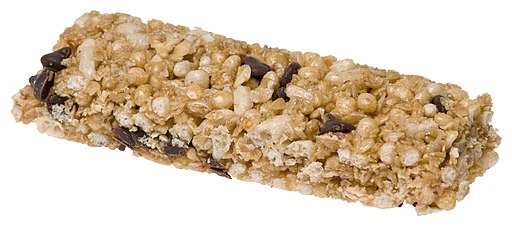

Ratatouille

Description
Granola is a convienient snack, but high in sugar so enjoy sparingly!
Ingredients:
- Rolled Oats
- Maple Syrup
- Kosher Salt
- Vegtable Oil
Steps:
- Combine syrup, salt and oil
- Stir into oats
- Spread on a cookie sheet
- Bake at 225F for 30 minutes